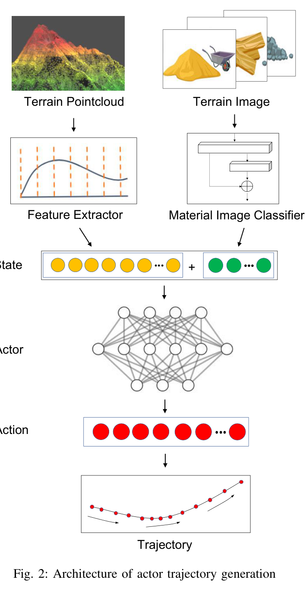
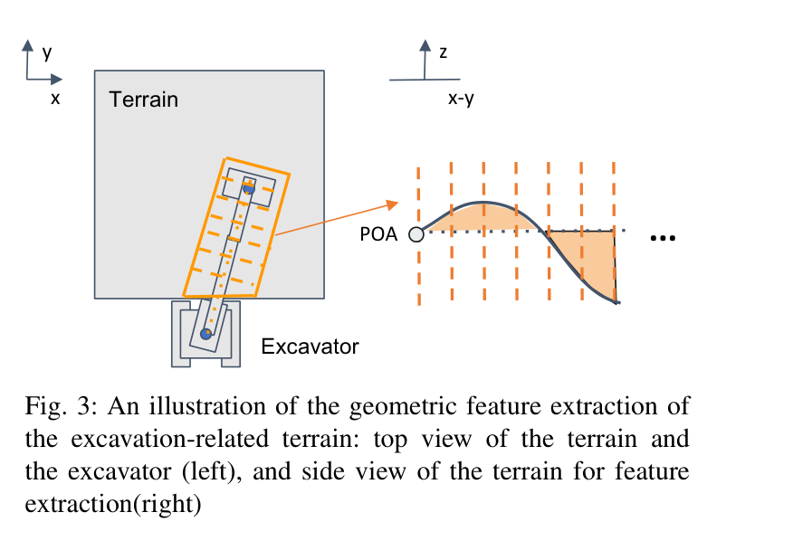
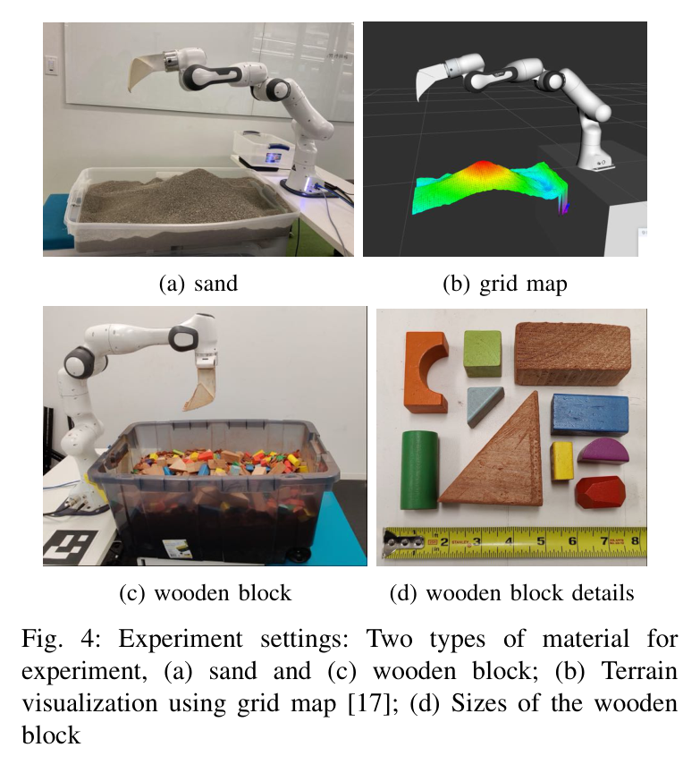
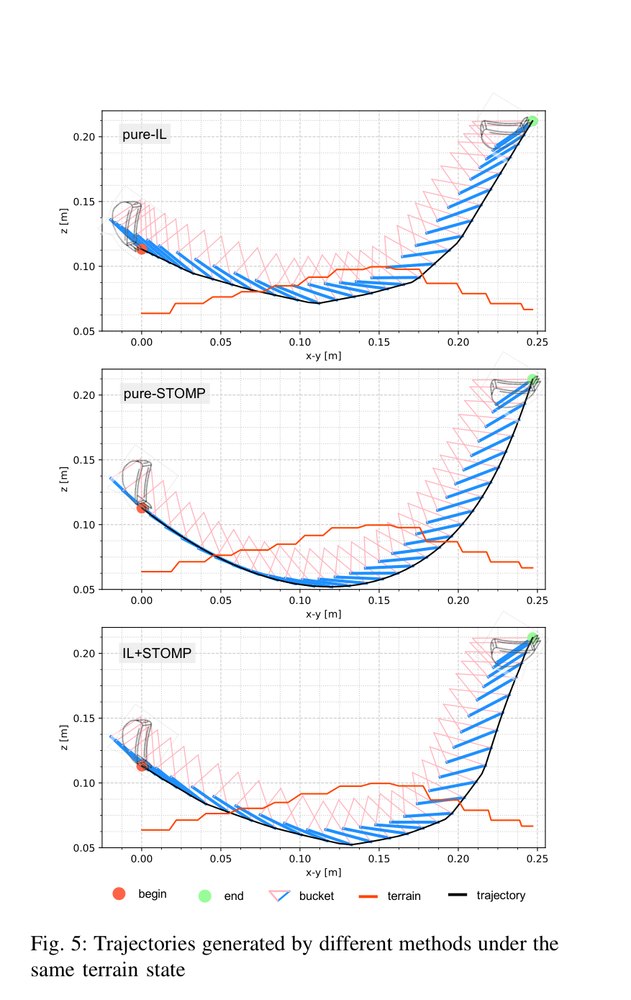
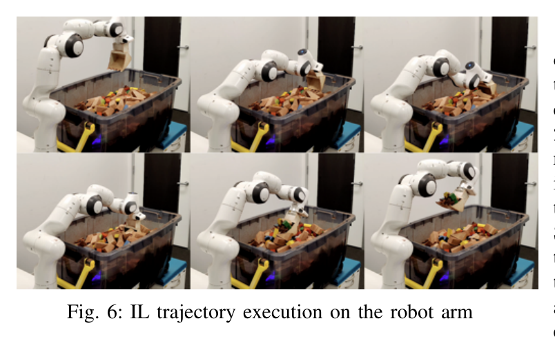
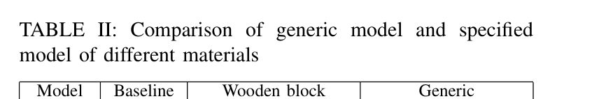
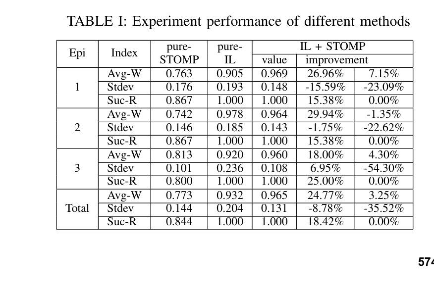

Imitation Learning and Model Integrated Excavator Trajectory Planning
Qiangqiang Guo, Zhixian Ye, Liyang Wang, Liangjun Zhang
한줄 요약 — 128개 전문가 시연에서 굴착기-POA 선상의 상대높이 단면과 재료 특징을 버킷 자세열로 매핑하고, 사람이 적합성을 확인한 초기 궤적을 관절공간 STOMP가 IK·경계·부드러움·참조 이탈·목표 체적으로 최적화해, pure IL의 낮은 분산과 pure STOMP의 실행 가능성을 결합한 2단계 굴착 궤적 계획법이다.
1.연구 배경 및 동기
전문가 작업패턴과 모델 제약을 한 궤적에 결합하는 이유
굴착 궤적은 토질·형상에 따라 달라지고 버킷-자재 접촉을 정확히 모델링하기 어렵다. rule-based 방식은 고정 환경에서 잘 작동해도 조건 변화에 약하고, model optimization은 기구학·안전 제약을 다룰 수 있지만 접촉모델 오차와 초기 궤적에 민감하다. RL은 많은 탐색 데이터와 simulation-real 전이 문제가 있으며, 순수 IL은 시연 범위 밖에서 실패하거나 IK·경계를 위반할 수 있다.
저자들은 전문가가 아는 '좋은 궤적 형상'과 모델이 확인할 수 있는 '실행 가능성'을 두 단계로 분리한다. IL actor가 지형 형상과 재료에서 초기 버킷 궤적을 생성하고, STOMP가 관절공간에서 기구학·작업영역·smoothness·참조 이탈·목표 굴착체적 비용을 최적화한다. 실행 결과와 사람의 0~10 평가는 다시 시연셋에 들어가 actor를 갱신한다.
model-based 최적화는 접촉 동역학 모델과 경험 파라미터가 자재가 바뀔 때 부정확해진다.
STOMP 같은 최적화는 초기 궤적에 따라 탐색 방향과 최종해가 크게 달라질 수 있다.
IL은 제한된 시연의 편향과 OOD 상태에서 비현실적·IK 불가능한 궤적을 낼 수 있다.
이 연구의 기여
IL이 초기 형상을 만들고 STOMP가 실행 가능성과 목적을 보정하는 2단계 계획 구조를 제안했다.
전체 grid 대신 POA-굴착기 선상의 상대높이 단면과 재료 특징으로 작은 상태를 구성했다.
인간 판정·직접 시연·실행 평가를 모아 importance sampling으로 actor를 갱신하는 DAgger형 루프를 만들었다.
Franka의 모래·목재 블록 실험에서 pure IL·pure STOMP와 평균중량·분산·성공률을 비교했다.
2.방법론 및 시스템 구성
상태 s는 기하 특징 sg와 재료 특징 sm의 결합이다. sg는 POA에서 굴착기 베이스로 이어지는 작업 관련 영역을 n개 단면으로 나누고 각 단면의 POA 대비 상대높이를 합산해 만든다. sm은 point cloud와 같은 시점의 지형 이미지를 사전학습 분류기에 넣어 얻는다. 행동 a는 전문가 궤적에서 시간축으로 균등 선택한 m개 버킷 자세로, 각 자세는 평면거리·z·버킷각의 3변수라 3m차원이다.
actor가 새 상태의 궤적을 만들면 사람이 형상을 검사한다. 좋지 않으면 전문가가 로봇을 직접 조작해 시연을 추가하고, 좋으면 actor 궤적을 STOMP의 초기·참조 궤적으로 사용한다. STOMP는 관절공간 noisy trajectory를 반복 샘플링해 IK 가능성을 확보하고, 경계 위반·smoothness·초기궤적 이탈·목표체적 비용을 줄인다. 실행 뒤 사람 평가 r∈[0,10]을 (s,a,r)과 저장해 높은 평가 궤적을 더 자주 재학습한다.
처리 파이프라인
1
지형 센싱
Azure Kinect point cloud를 grid map으로 만들고 같은 시점의 RGB 지형 이미지를 재료 분류기에 넣는다.
2
Sectional-volume 특징
POA-베이스 선상의 주황 영역을 n구간으로 나누고 각 구간의 POA 대비 높이차 합을 sg로 만든다.
3
재료 특징 결합
모래·암석성 재료의 궤적 차이를 반영하도록 분류기의 sm을 sg와 연결해 상태 s={sg,sm}을 구성한다.
4
IL actor 학습
전문가 버킷 궤적의 m개 자세를 행동 a∈R^(3m)로 만들고 예측과 시연 사이 MSE를 최소화한다.
5
인간 적합성 게이트
새 궤적이 좋으면 STOMP로 넘기고 부적합하면 사람이 직접 시연해 demonstration dataset을 보강한다.
6
관절공간 STOMP
초기 궤적 주변의 noisy joint trajectory를 샘플링하고 비용에 따라 확률적으로 갱신해 기구학을 만족한다.
7
다중 비용 보정
작업영역 경계, smoothness, IL 참조 이탈, raw-volume과 목표체적 차이를 비용으로 함께 사용한다.
8
실행·재학습
Franka에서 실행하고 사람이 0~10으로 평가한 (s,a,r)을 저장해 높은 평가 sample을 우선 재학습한다.
terrain과 궤적이 둘러싼 raw volume을 대용값으로 쓰고 smoothness·체적 비용과 point별 경계·참조 비용을 결합한다.

원문 Figure 2 · PDF p.3 — Fig. 2: Architecture of actor trajectory generation

원문 Figure 3 · PDF p.3 — Fig. 3: An illustration of the geometric feature extraction of the excavation-related terrain: top view of the terrain and the excavator (left), and side view of the terrain for feature extraction(right)
3.핵심 기술
굴착 관련 영역만 압축하는 sectional-volume 상태
베이스가 single excavation 동안 swing하지 않는다는 가정을 이용하면 POA와 베이스를 잇는 좁은 영역이 궤적에 가장 직접적이다. 전체 grid를 CNN에 넣지 않고 이 영역을 n개 단면으로 나누어 상대높이 합을 사용하면 상태와 데이터 요구량을 줄인다. 재료 특징을 별도 연결해 같은 형상이라도 모래와 목재 블록에서 다른 형상을 낼 수 있게 한다.
geometry feature는 sg∈R^n이고 material feature sm과 연결한다.
action은 swing을 제외한 버킷 평면거리·높이·각도의 m개 시점이다.
논문은 n·m과 actor 층 구성을 공개하지 않아 완전 재현에는 정보가 부족하다.
전문가 형상을 보존하는 안전 STOMP
STOMP는 gradient가 필요 없고 좋은 초기값에서는 적은 반복으로 수렴할 수 있어 접촉모델이 불완전한 굴착에 적합하다. 관절공간에서 샘플링해 순·역기구학 가능성을 확보하고, IL 참조 비용으로 인간 작업패턴을 보존한다. 경계 지수비용은 바닥·trench 외부 접촉을 막고 smoothness는 에너지와 급격한 동작을 줄인다.
pure-STOMP의 linear initialization보다 IL 초기궤적이 높은 체적과 계획성공률을 만들었다.
pure-IL의 일부 자세는 IK를 만족하지 않아 실험에서 linear interpolation이 필요했다.
raw volume은 실제 접촉체적의 단순 대용값이며 재료 상호작용을 정확히 모델링하지 않는다.
사람 평가를 포함한 DAgger형 폐루프
actor가 낸 형상을 사람이 먼저 판정하고, 실행 뒤 다시 0~10으로 평가한다. 부적합 상태에는 직접 시연을 추가하고 좋은 실행은 높은 확률로 재학습한다. 이 루프는 policy가 방문하는 상태에서 데이터셋을 확장하지만 사람 개입이 필수이고, 논문에서 일정 episode 이후 데이터 추가 효과가 정체됐다.
초기 actor 학습에는 128개 demonstration trajectory를 사용했다.
평가값이 큰 궤적을 importance sampling으로 더 자주 선택한다.
완전 자율 online adaptation이 아니라 인간 확인과 평가를 포함한 데이터 수집 체계다.
4.실험 결과
실험 환경·장비·데이터
bucket end-effector를 단 Franka Panda와 Azure Kinect point cloud를 사용했다.
굴착영역은 로봇 앞 0.8m×0.4m 사각형이며 base origin에서 0.2m offset을 뒀다.
재료는 모래와 여러 크기의 wooden block이고 terrain은 grid map으로 표현했다.
비교법은 IL+STOMP, pure-IL, linear initialization의 pure-STOMP다.
실험 프로토콜
방법별 세 episode, episode당 15회로 총 45회 모래 굴착을 수행했고 초기 지형을 수동으로 같게 맞췄다.
POA는 terrain 최고점을 찾고 그보다 일정 거리 바깥에 두는 동일 rule-based 알고리즘으로 골랐다.
목재 블록에서는 전체 재료로 학습한 generic actor와 해당 재료만 학습한 specialized actor를 STOMP baseline과 비교했다.
비교 기준
actor 궤적을 interpolation 후 직접 실행하는 pure-IL
POA와 종료점 사이 linear initialization을 STOMP로 최적화하는 pure-STOMP
고정 template를 STOMP로 보정하는 목재 블록 baseline
평가 지표
average·minimum·maximum excavation weight
45회 굴착중량의 standard deviation
trajectory planning success rate
pure-STOMP·pure-IL 대비 평균중량과 분산 개선율

원문 Figure 4 · PDF p.5 — Fig. 4: Experiment settings: Two types of material for experiment, (a) sand and (c) wooden block; (b) Terrain visualization using grid map [17]; (d) Sizes of the wooden block
핵심 결과 해석
모래 세 episode 합산에서 IL+STOMP의 평균 굴착중량은 0.965kg으로 pure-STOMP 0.773kg보다 24.77%, pure-IL 0.932kg보다 3.25% 높았다. 계획성공률은 IL+STOMP와 pure-IL이 100%, pure-STOMP가 84.4%였다. pure-STOMP의 linear 초기 궤적이 terrain을 관입하지 못하면 STOMP가 volume cost를 줄일 탐색 공간을 얻지 못하는 실패가 발생했다.
IL+STOMP의 표준편차는 0.131kg으로 pure-IL 0.204kg보다 35.52% 낮고 pure-STOMP 0.144kg보다도 8.78% 낮았다. 목재 블록에서 specialized·generic actor의 평균중량은 0.22882kg·0.22754kg으로 baseline 0.21248kg보다 7.69%·7.09% 높았다. 두 actor는 baseline보다 최소중량과 성공률을 크게 개선했지만 최대중량은 약 18% 낮아 더 보수적인 궤적을 만들었다.
정량 결과
평가 항목
정량 결과
조건·맥락
원문 근거
IL+STOMP 평균 굴착중량
0.965 kg
모래, 3 episode×15회
PDF p.6
pure-STOMP 대비 평균중량 개선
24.77%
0.965 kg 대 0.773 kg
PDF p.6
IL+STOMP 계획성공률
100%
pure-STOMP는 84.4%
PDF p.6
pure-IL 대비 표준편차 감소
35.52%
0.131 kg 대 0.204 kg
PDF p.6
목재 specialized actor 평균중량
0.22882 kg (+7.69%)
baseline 0.21248 kg
PDF p.6
목재 generic actor 평균중량
0.22754 kg (+7.09%)
baseline 0.21248 kg
PDF p.6
목재 specialized planning success
0.8444
baseline 0.5556 대비 +52.00%
PDF p.6
실패 사례와 경계조건
pure-STOMP의 linear 초기 궤적이 terrain을 관입하지 않으면 volume cost가 유효한 개선 방향을 만들지 못했다.
pure-IL 원시 출력에는 IK를 만족하지 않는 자세가 있어 실제 실행 전 linear interpolation이 필요했다.
제한된 시연 때문에 pure-IL의 굴착중량 분산이 컸고, actor가 모든 terrain state를 덮지 못했다.
목재 actor는 baseline보다 안정적·성공률이 높지만 최대 굴착중량은 약 18% 낮은 보수성을 보였다.

원문 Figure 5 · PDF p.5 — Fig. 5: Trajectories generated by different methods under the same terrain state

원문 Figure 6 · PDF p.6 — Fig. 6: IL trajectory execution on the robot arm
5.한계 및 향후 연구
현재 한계
actor는 128개 시연만으로 학습해 지형·재료 분포의 범위가 작다.
새 궤적 적합성 판정과 실행 평가는 사람이 수행하므로 완전 자율 데이터 루프가 아니다.
raw enclosed volume은 실제 자재-버킷 상호작용과 손실을 정확히 나타내지 못한다.
Franka·모래·목재 tray 결과라 실제 유압 굴착기의 힘·스케일·진동 일반화는 확인되지 않았다.
향후 연구
더 크고 다양한 demonstration dataset에서 IL+STOMP와 pure-IL을 다시 평가한다.
DAgger 정체를 줄이기 위해 few-shot·고급 IL·RL 기법을 적용한다.
실제 굴착기에서 시연 수집·정제, 비용함수, 실행 인터페이스를 설계한다.
실행 torque·force로 raw-volume 오차와 접촉 위험을 보정하는 학습 residual model을 결합한다.
6.한마디로 정리
핵심 방법은?
sectional-volume·재료 특징의 IL actor가 전문가형 초기 궤적을 만들고 STOMP가 기구학·경계·smoothness·체적을 보정한다.
핵심 결과는?
모래에서 pure-STOMP보다 평균중량 24.77% 향상, 계획성공률 100%, pure-IL보다 분산 35.52% 감소를 기록했다.
한계는?
128개 시연·사람 게이트·단순 volume model·Franka 실험에 의존해 실제 굴착기와 미지 재료 일반화가 남는다.
#학습·RL·IL·VLA#작업·궤적계획#모방학습#심층 신경망#STOMP#모델 기반 궤적 최적화
나의 의견 / 우리 연구와의 연관성
이 방법은 자율굴착에서 데이터와 모델의 역할을 분명히 나눈다. 사람 시연은 접촉을 수식화하기 어려운 궤적 형상을 제공하고, 모델 최적화는 IK·경계·부드러움처럼 명시 가능한 안전조건을 책임진다. 학습이 모든 것을 대체하지 않고 불확실한 부분만 제안하게 하는 구조는 데이터가 적고 사고비용이 큰 필드로봇에 적합하다.
실제 굴착기로 확장하려면 사람의 good/bad 판정을 actor uncertainty와 제약 검사로 일부 자동화하고, raw volume 대신 LiDAR height map·재료분류·유압압력·버킷속도에서 실제 충만율과 저항을 예측해야 한다. STOMP의 hard constraint는 유지하면서 학습 residual을 체적·힘 비용에만 사용하면 안전성과 적응성을 분리 검증할 수 있다.
ensemble actor가 OOD·불확실성이 높을 때만 전문가를 요청하는 active DAgger로 확장할 수 있다.
재료별 actor와 generic actor의 차이는 few-shot 토질 적응 벤치마크에 적합하다.
유압압력·관절속도로 학습한 접촉 residual을 STOMP volume cost에 결합할 수 있다.
평가에는 개입률·IK/경계 위반·중량 분산·계획시간·적응 sample 수를 함께 포함해야 한다.
7.전체 그림·표
본문 핵심 위치에 배치하지 않은 원문 Figure와 Table을 원문 페이지 순서로 수록한다.

원문 Table II · PDF p.6 — TABLE II: Comparison of generic model and specified model of different materials

원문 Table I · PDF p.6 — TABLE I: Experiment performance of different methods